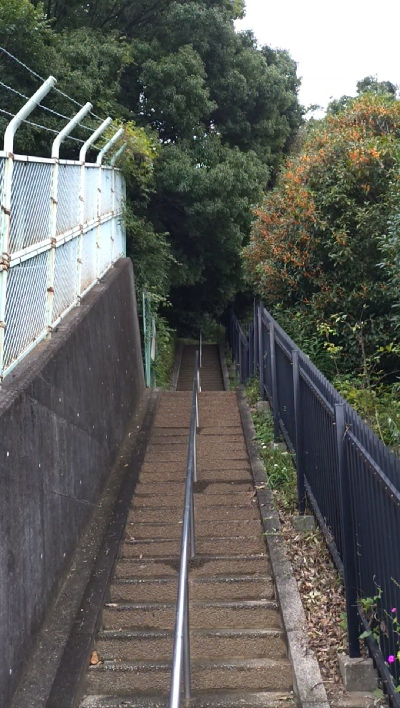
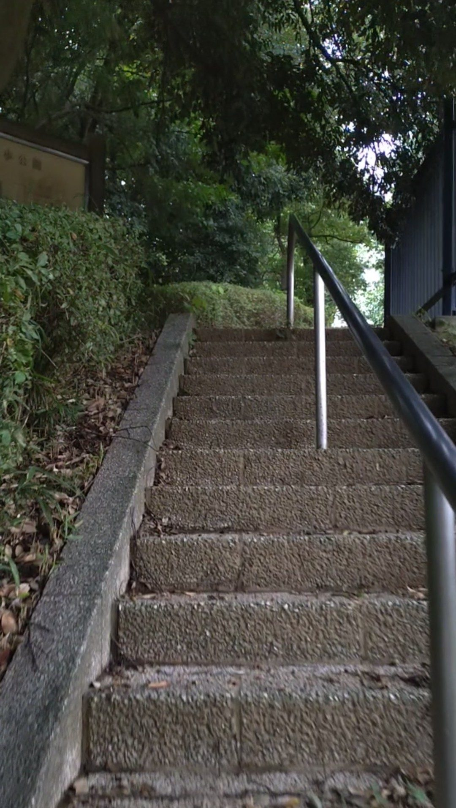
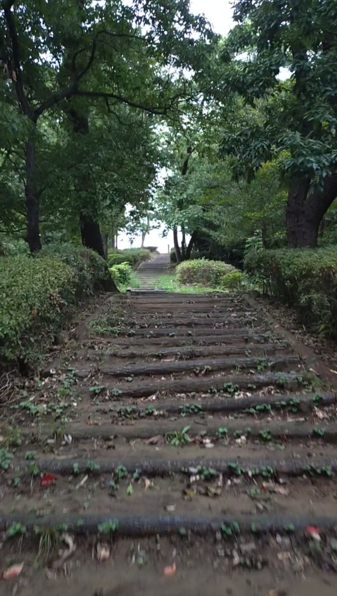
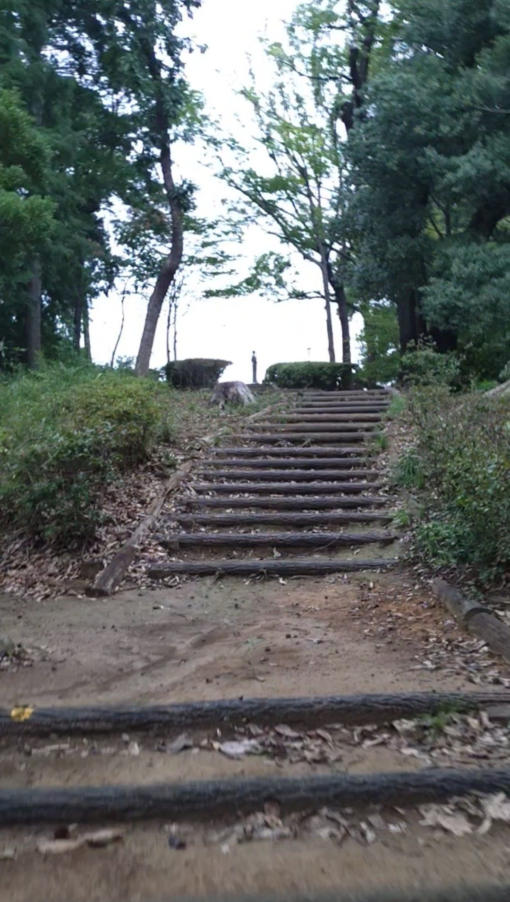
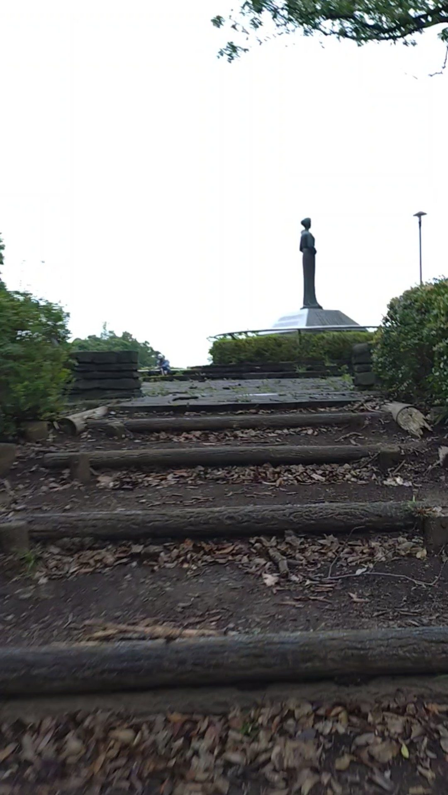
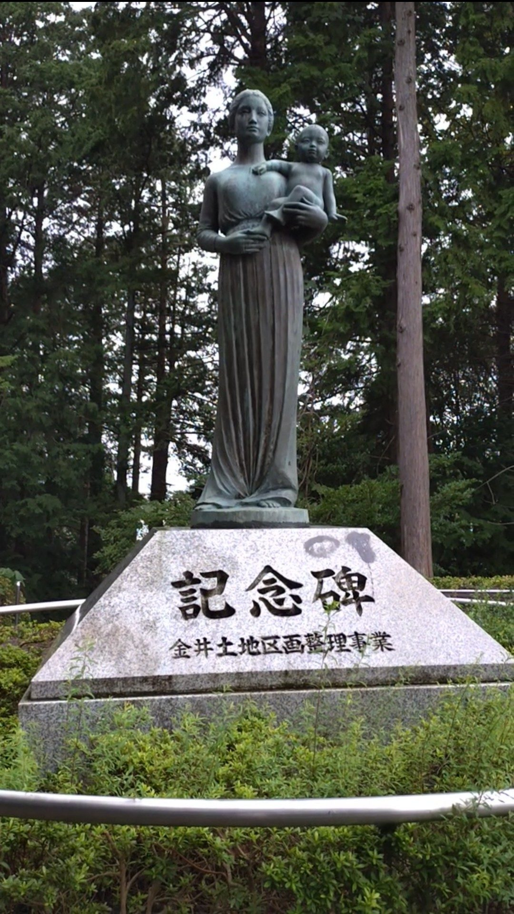
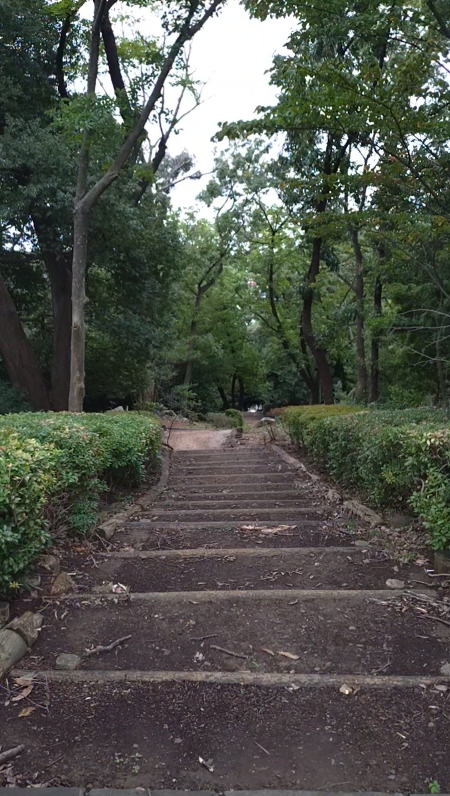

📅 2026年9月19日訪問
☁️ 曇り、午後
⏱️ 登り2分
💰 無料
丘の上にある広場までアクセスするための、170段の長い階段に行ってきました。階段と言っても、全体としては段が低く、軽い気持ちで自然を楽しむことができるかなと思いました。おそらくですが、多摩丘陵の谷戸としてできた斜面を活かした公園が整備され、その上にアクセスするための階段なのではないか、と思いました。
階段・石段スポット基本情報
アクセス
小田急小田原線「玉川学園前駅」下車、徒歩約25分。正面入り口というより裏口のような場所にあり、見つけるのが少し難しい入り口です。
注意点・持ち物
序盤は段差がやや高めですが、その後は緩やかな坂のような階段が続きます。歩きやすい靴でお越しください。
行ってみた
階段の入り口につきました。正面入り口というより裏口っぽい感じです。見つけるのが難しいですね。

登り始めます。最初のうちは、階段の段は高めです。

登り始めると、緩やかな長い階段が続きます。どちらかというと緩やかな坂のほうに近い感じです。自然を楽しむことができるエリアです。

風景を楽しみながら登っていくと、頂上まで結構あっという間です。

頂上付近です。木々が終わり、頂上付近が開けている様子がわかります。

頂上にある記念碑です。この公園が整備されたことを記念するもののようです。

階段の頂上から階段のほうを振り返ります。長く続いた緩やかな階段でした。
